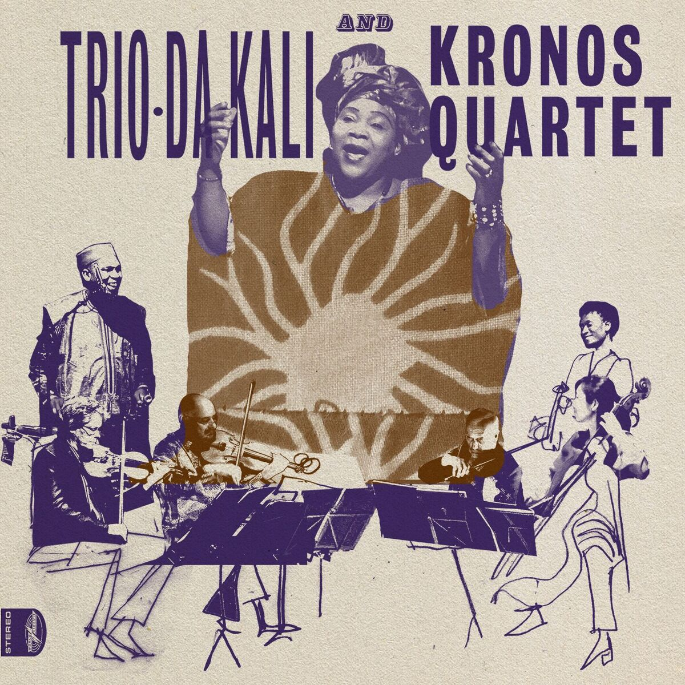

Back to discography

LADILIKAN
Trio Da Kali and Kronos Quartet
World Circuit, 2017
2018 Songlines Music Award – Fusion
“A bold fusion of the musical traditions from the West and those of Africa… If it is true that music crosses all boundaries and connects all of us with our common humanity, regardless of the usual divisions, then Ladilikan shines brightly as a wonderful example of putting that idea into practice.”
- Folk Radio UK